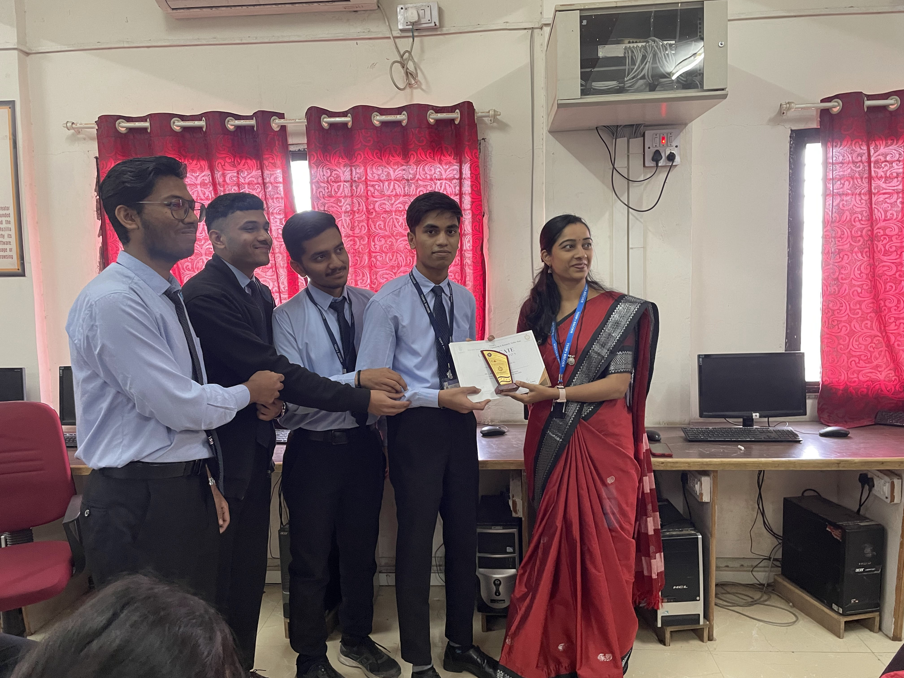

SCIENCE EXIBITION AT TSSM'S CAMPUS

Science exhibitions have long been cherished as a platform where wonder meets education, where curiosity is sparked, and where innovation takes center stage. These exhibitions serve as a melting pot of ideas, bringing together scientists, educators, students, and enthusiasts to celebrate the marvels of science in all its glory. Let's embark on a journey through the vibrant world of a science exhibition, where discovery awaits at every turn.
Unveiling the Wonders
As you step into the exhibition hall, you're greeted by a symphony of sights and sounds – colorful displays, interactive exhibits, and the hum of excitement. Each corner holds a treasure trove of knowledge, inviting you to delve deeper into the realms of physics, chemistry, biology, and beyond.
Hands-On Exploration
One of the most captivating aspects of a science exhibition is its hands-on approach to learning. Visitors are encouraged to touch, feel, and interact with the exhibits, fostering a deeper understanding of scientific concepts. From building simple machines to conducting fascinating experiments, there's no shortage of opportunities to engage both the mind and the senses.
Bridging the Gap Between Theory and Practice
For many, science can seem abstract or intimidating, confined to textbooks and lectures. However, a science exhibition bridges this gap by bringing theory to life. Complex principles are simplified through engaging demonstrations and visual aids, making them accessible to audiences of all ages and backgrounds. Whether you're a seasoned scientist or a curious novice, there's something for everyone to discover.
Inspiring the Next Generation
Perhaps the most significant impact of a science exhibition lies in its ability to inspire the next generation of scientists and innovators. For young minds, the exhibition serves as a playground of possibilities, igniting a passion for discovery and sparking dreams of future careers in STEM fields. By showcasing the latest advancements and breakthroughs, these events plant the seeds of curiosity and sow the seeds of innovation, ensuring a bright future for scientific exploration.
A Celebration of Diversity and Creativity
A Celebration of Diversity and Creativity
Science exhibitions are a testament to the boundless creativity and diversity within the scientific community. From groundbreaking research projects to innovative DIY experiments, each exhibit showcases the unique talents and perspectives of its creators. It's a celebration of human ingenuity, where ideas are exchanged, collaborations are formed, and new horizons are explored.
Conclusion: Embracing the Spirit of Inquiry
In a world filled with uncertainty, science exhibitions serve as beacons of hope and sources of inspiration. They remind us of the power of curiosity, the joy of discovery, and the limitless potential of the human mind. As we navigate the complexities of the modern world, let us never forget the importance of embracing the spirit of inquiry and fostering a love for science in all its forms.
So, the next time you have the opportunity to attend a science exhibition, don't hesitate to dive in headfirst. Who knows what wonders await you on the other side?
As the saying goes, "Science is magic that works." And indeed, a science exhibition is where that magic comes to life.
Students from first year :
- Ranjit c jagtap
- Yugandhar M Saindane
- Niraj Borse
- Shwet khadatkar
The Medical Store Management System is a Python-based tool that simplifies operations for medical store owners. It offers an intuitive interface to manage customer data, medicine inventory, suppliers, and bill generation, streamlining store processes for efficient business tracking.
By ~ Saindane Yughandar
Contact : abc@gmail.com